Tutorial. Part 2. File and image fields¶
In this part we will demonstrate how to work with files and images in Jam.py.
Adding Image field¶
Let’s select the “Customers” catalog, Double-click it to open the Item Editor Dialog and add an image field “Photo”:
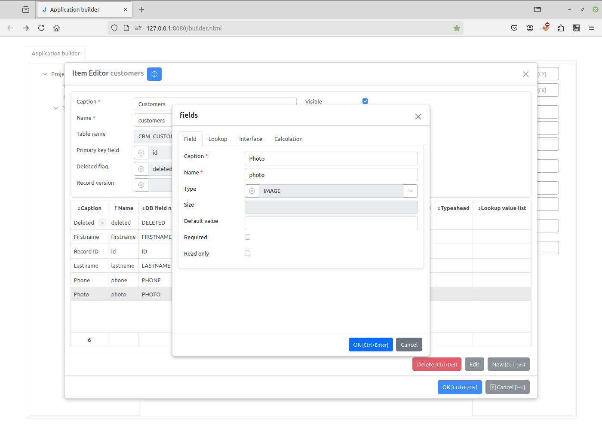{kind=link}
Now refresh the project page, click the Customers menu item and open the edit form.
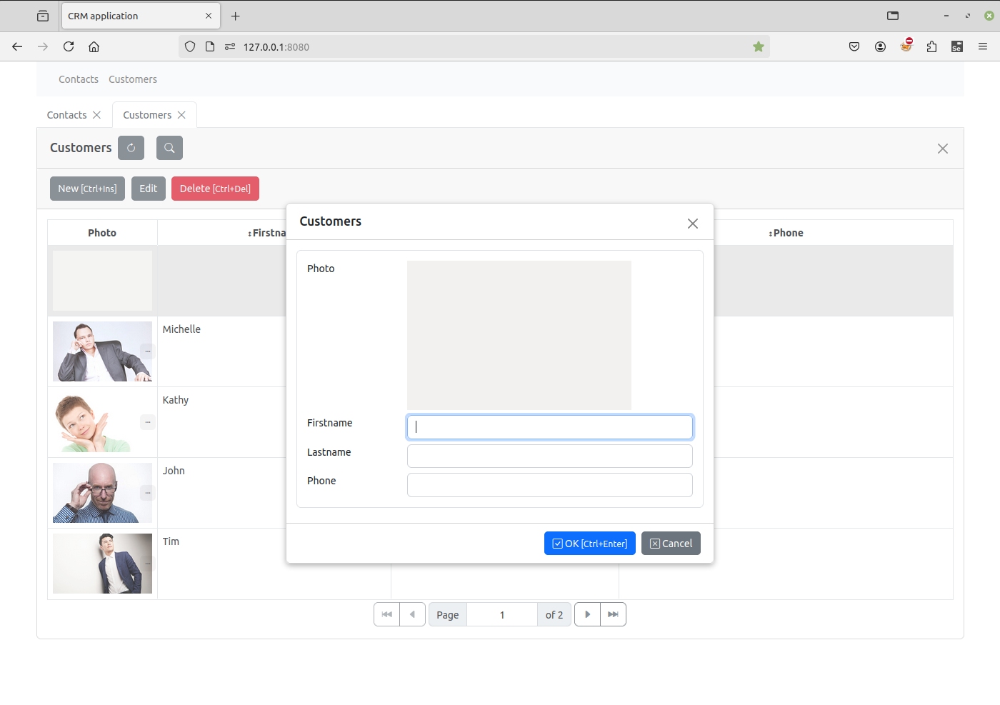{kind=link}
Double-click the image in the editing form to select an image from the Open File dialog box.
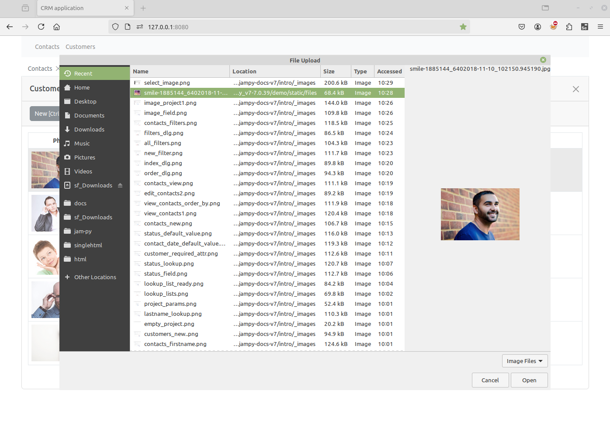{kind=link}

Note
To clear an image, hold down the Ctrl key and double-click the image.
Let’s open the Field Editor Dialog in Application Builder and set View width to 120 and Edit width to 314 on the Interface tab.
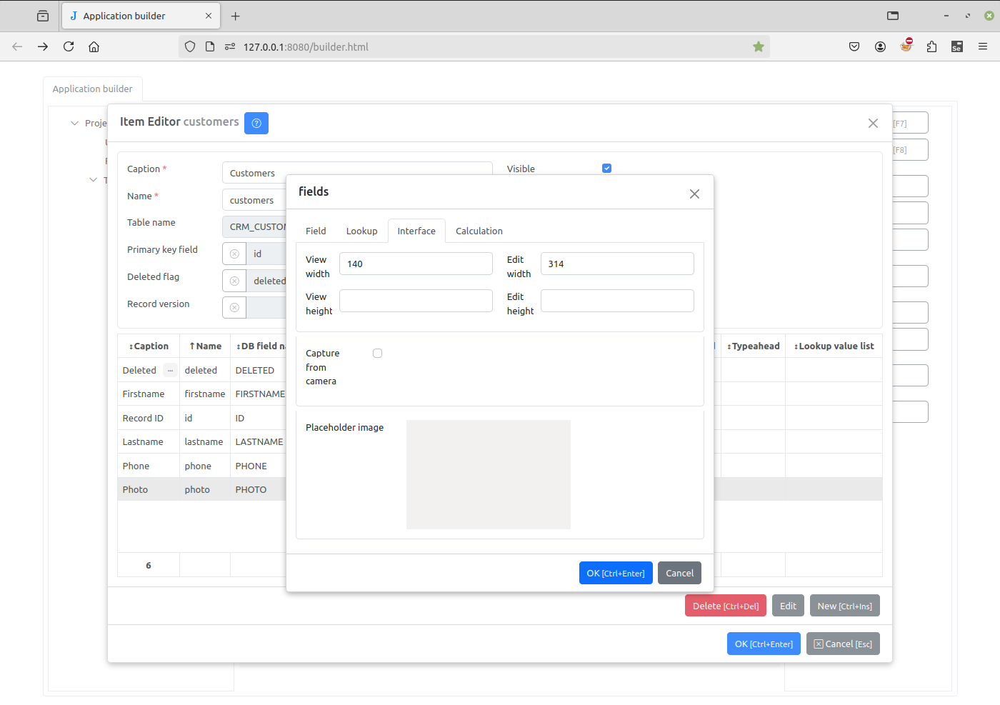{kind=link}
Note
You can set the image placeholder by double-clicking on it.
In the View Form Dialog we set Row lines to 4 and the width of the “Photo” field to 120.
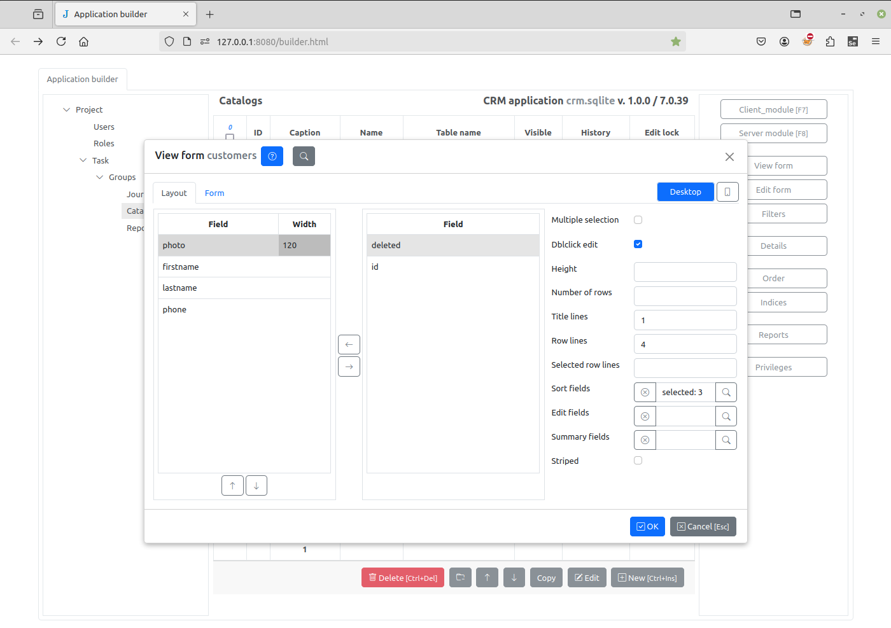{kind=link}
Now on the project page we will have:
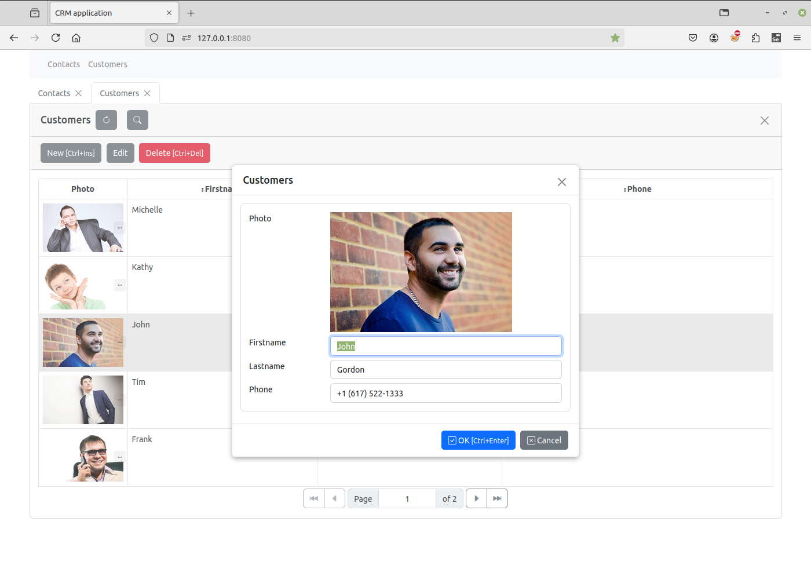{kind=link}
See also¶
Capturing image from camera¶
You can capture the image from the camera. To do so check the Capture from camera check box. In this case when the image is not set the video from camera will be displayed instead of the image placeholder.
Double-click the video to capture the image. To clear an image, hold down the Ctrl key and double-click the image, after that the video will be displayed.
Adding file field¶
Now we add a field that will store an attachment file to the “Contacts” journal.
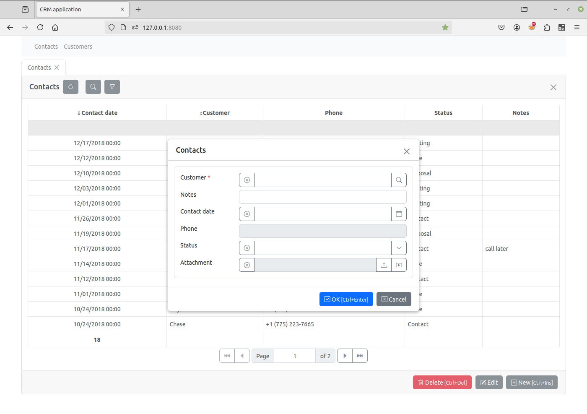{kind=link}
This field will be displayed in the editing form as follows:
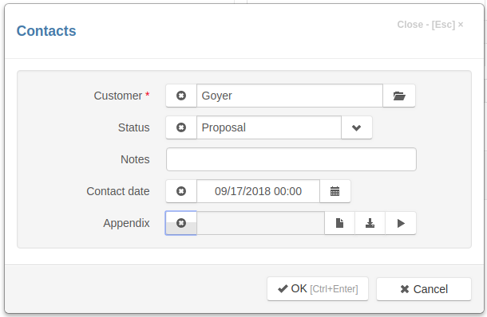{kind=link}
The field input have three buttons on the right - to upload, to download and to open a file.
Let’s open the Field Editor Dialog in Application Builder and uncheck the Download btn check box and set Accept attribute to ‘.pdf’.
Please review the list of accepted values, before adding the values.
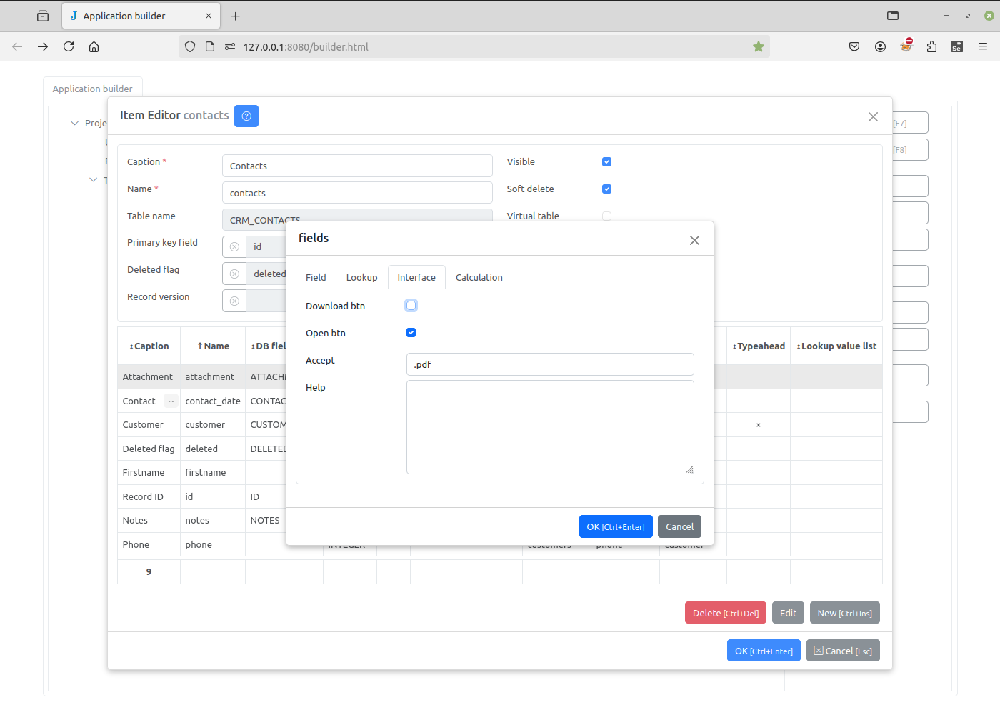{kind=link}
Let’s refresh the project page, open the “Contacts” edit form and upload a file by clicking the upload button:
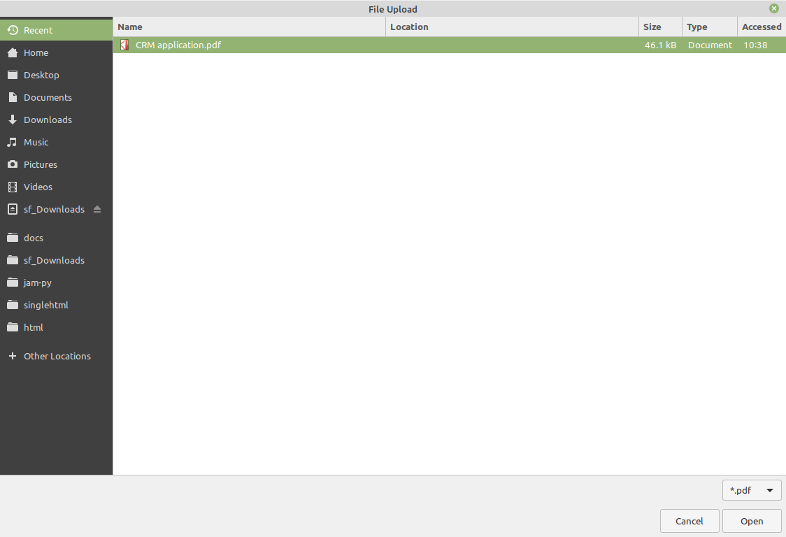{kind=link}
Now we can open a file in the browser by clicking on the open button.
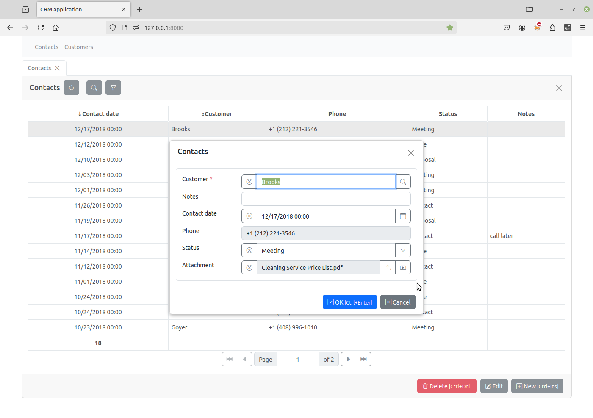 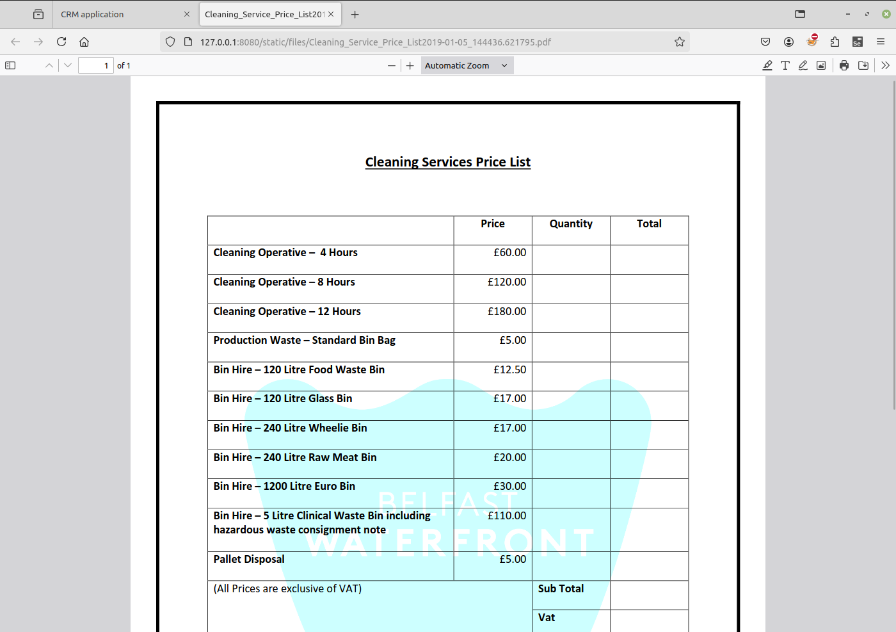{kind=link}
{kind=link}
Note
Files and images are stored in the static/files folder on the server.
You can limit the size of files that can be uploaded to the server by setting Max content length attribute in the project parameters.